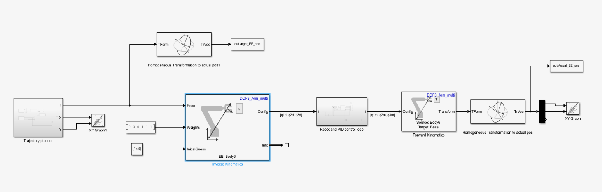
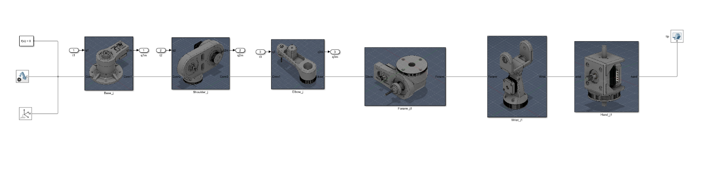
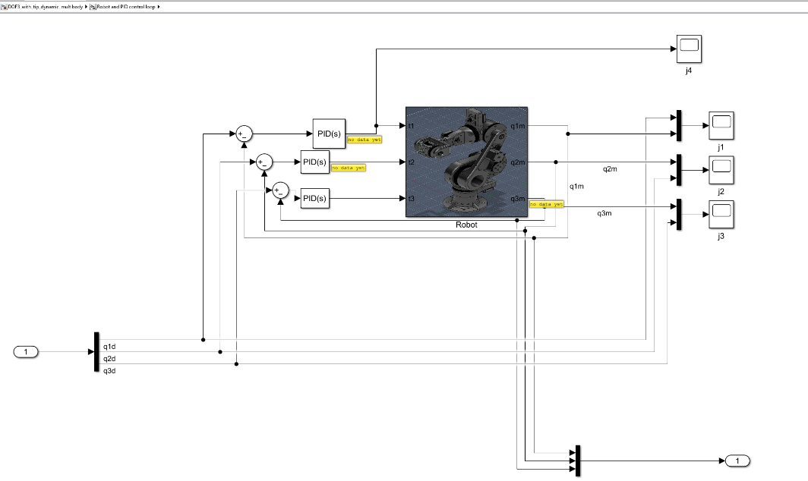
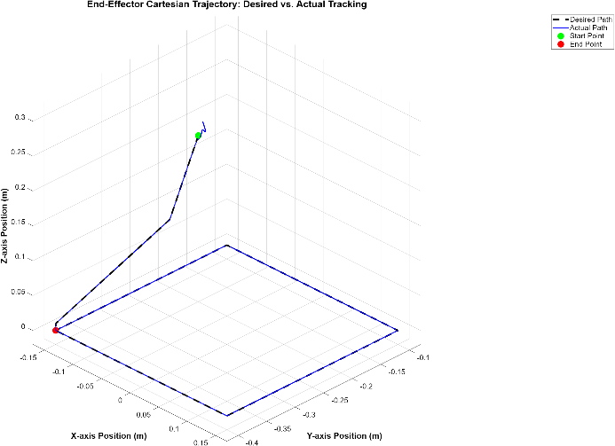

MODULE
Robotic Control Design
Complete dynamic modelling, stability analysis, and simulation of a custom 3-DOF robotic manipulator — from Lagrangian derivation and Jacobian linearisation through to MATLAB Simscape PID trajectory tracking with quantified sub-millimetre performance.
This project derived and implemented the complete control pipeline for a 3-DOF articulated manipulator — a constrained version of a custom 6-DOF robotic arm design. The goal was to build the full mathematical model from first principles, expose the limitations of linear analysis, and validate the system through Simscape simulation with PID trajectory control.
The manipulator has three active joints: a base joint rotating about the vertical axis and shoulder and elbow joints rotating in the vertical plane, structurally similar to a simplified PUMA 560 configuration.
The nonlinear equations of motion were derived using the Lagrangian formulation, yielding the full manipulator equation:
τ = M(q)q̈ + V(q,q̇) + G(q)
The 3×3 inertia matrix M(q), Coriolis/centrifugal matrix V(q,q̇), and gravity vector G(q) were all derived symbolically in MATLAB, using link mass, centre-of-mass distances, and inertia values taken directly from the CAD model geometry.
The nonlinear state-space model was linearised around a worst-case operating point — the arm fully extended horizontally — using a first-order Taylor series expansion. This produced the standard LTI form Δẋ = AΔx + BΔu, from which the MIMO transfer function matrix G(s) was derived.
The resulting 3×3 transfer function matrix revealed important structural information: the base joint is dynamically decoupled from the shoulder and elbow in this configuration (zero off-diagonal entries in the first row and column), while G₂₃ and G₃₂ capture cross-coupling between the two vertical-plane joints. All plants take the form 1/s², confirming the marginally stable character of the uncompensated system.
A key result of the linearisation is its fundamental limitation: the A matrix is evaluated at q̇₀ = 0, which mathematically erases the entire Coriolis matrix — a velocity-dependent term. The resulting linear model is blind to inertial coupling forces generated during motion, making it strictly valid only in the vicinity of the operating point.
Lyapunov stability theory provides the correct framework for global analysis. A candidate energy-like Lyapunov function was constructed from the tracking error e = q_d − q, and the condition V̇ < 0 was examined. This motivates advanced controllers such as computed torque control, which explicitly compensate for the full nonlinear dynamics across the workspace rather than only near a fixed point.
The full 3D CAD model was imported into MATLAB Simscape, with each component assigned material properties so that Simscape could automatically compute mass, centre of gravity, and inertia tensors. This approach captures the Coriolis effects that the linearised model ignores, giving a physically representative simulation environment.
A square trajectory in the XY plane was defined using the signal editor and fed into an inverse kinematics block to generate joint-space references [q₁d, q₂d, q₃d]. Three independent PID controllers — one per joint — generated the torque commands to track these references in closed loop. PID gains were tuned using MATLAB's automated tuner targeting a 0.005 s response time to minimise phase lag during continuous path tracking.



The simulation confirmed the manipulator successfully reproduced the square trajectory geometry. During straight-line segments, all three PID controllers maintained stable, responsive tracking. The critical test regions were the four corners — points of abrupt directional change requiring rapid torque adjustment to overcome inertia.
Analysis of corner 3 (reached at t = 1.105 s) showed the maximum Cartesian tracking error during the transient phase was 7×10⁻⁴ m, converging rapidly to a steady-state error of 3.3×10⁻⁵ m. Joint-space analysis identified the base joint (Joint 1) as the primary contributor to corner overshoot, due to its influence on end-effector orientation in the horizontal plane.

The project made the gap between linear and nonlinear control concrete: the same system that looks stable in the frequency domain (all poles at origin, marginally stable) behaves differently during continuous motion because the linearisation actively erases the coupling terms. Simscape exposed this — the corners were harder than the straights precisely because that's where velocity-dependent forces peak. The natural next step is gain scheduling or computed torque control, and understanding exactly why is the most useful outcome of the analysis.